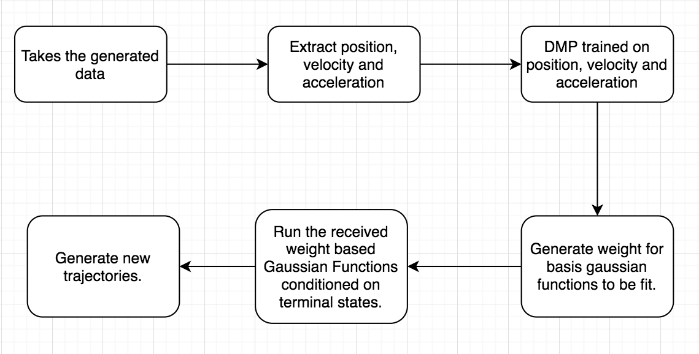
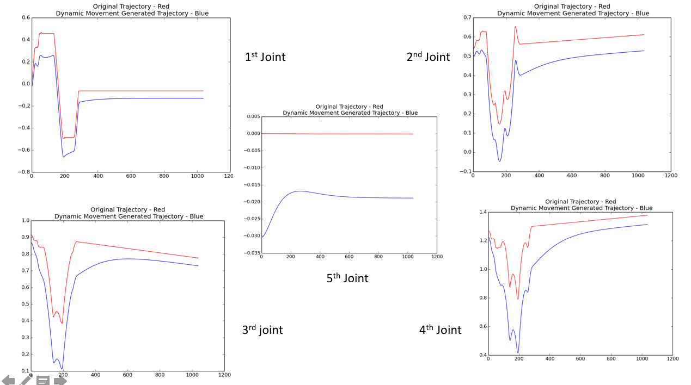
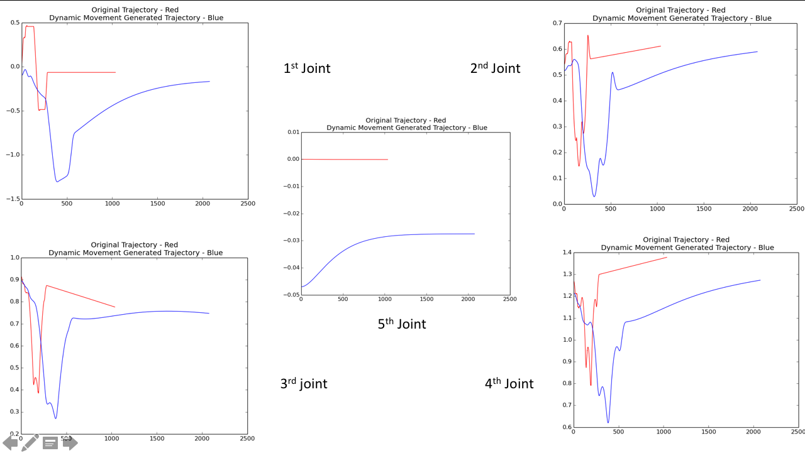
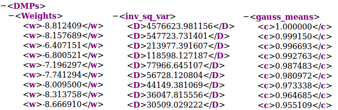

LEARNING FROM DEMONSTRATION USING DYNAMIC MOVEMENT PRIMITIVES
FEBRUARY - MAY 2018
LINK TO COMPLETE PROJECT REPORT
OBJECTIVE
To develop a Learning from Demonstration framework using Dynamic Movement Primitives for the 5-DOF Kuka YouBot manipulator arm in V-REP simulation environment
RESEARCH ASPECTS
• Giving demonstrations to the manipulator in task space and conducting learning experiments in joint-space
• Understanding scope of temporal and spatial scaling and how it reflects in the task space

FlowChart of data the process
METHODOLOGY
The complete environment was setup in V-REP and Python using its Remote-API interface with Python
The demonstrations could be fed to the simulation model in task-space using a gaming controller that uses ROS based Inverse Kinematics service
The training was done in joint space considering the variations at each joint level over time.
Several combinations for the number of Gaussian basis functions were tested and nfs = 150 gave most reliable results

Dynamic Movement Primitive Training pipeline
RESULTS
• The setup was successfully trained successfully for a given demonstration
• Testing on changed terminal states and temporal scaling requirements worked fairly well. Spatial scaling was not tried to avoid reaching joint limits for the robot

Initially learned DMP trajectory

Testing for changed start and end positions for all the joints

Testing for changed terminal states and temporal scaling (doubled time-span)

Snippet of the various parameters generated in the learned trajectory
Changed Terminal States | Temporal Scaling - Twice Slow
DMP - Changed Terminal states as well as Temporal Scaling